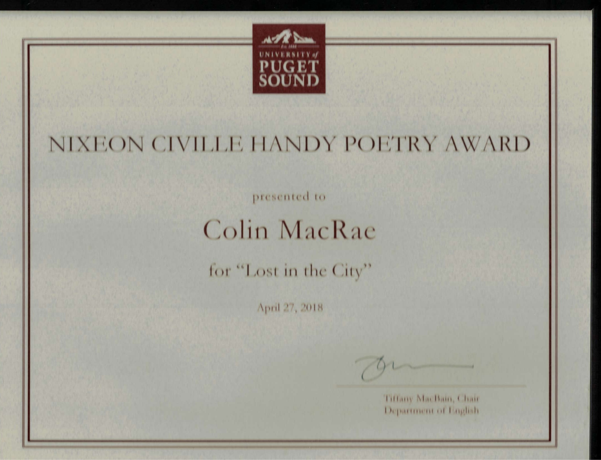

Lost In the City
My (hopefully first!) award winning poem. Was included in Spring '18 edition of Crosscurrents Magazine.


Lost in the City bricks slabs fences slats concrete ribcage suffocates sliver of faint blue sky an afterthought or swath the skyline forgot to patch over taxi infection street bum hustle subway at rush-hour the Black Hole of Calcutta – was that one more ghost or just a drifting takeout bag? a flashbang of cameras in Washington Square and pigeon armadas assault bun-crumbs amidst the chaos a membrane of vocal carnage IsaidNoit’sYoutoldOn5thStExcuse air thick as the shawl of the babushka who scrawls an ink map on your sweaty palm cups change and hobbles off leaving you always more lost than before leaving every stray dog or littered scrap your guide close your eyes and caress the asphalt’s braille await night for the winking lamp’s Morse code unravel these signs like a crumpled receipt of tallied past lives, their sum, and your signature newsstand deli briefcase gum stain bus stop neon urchins graffiti just breathe screeches the East Harlem sax and Broadway curbs sing eidolons while wept dreams flee from project windows into gutters sewers Hudson AtlanticDownload here